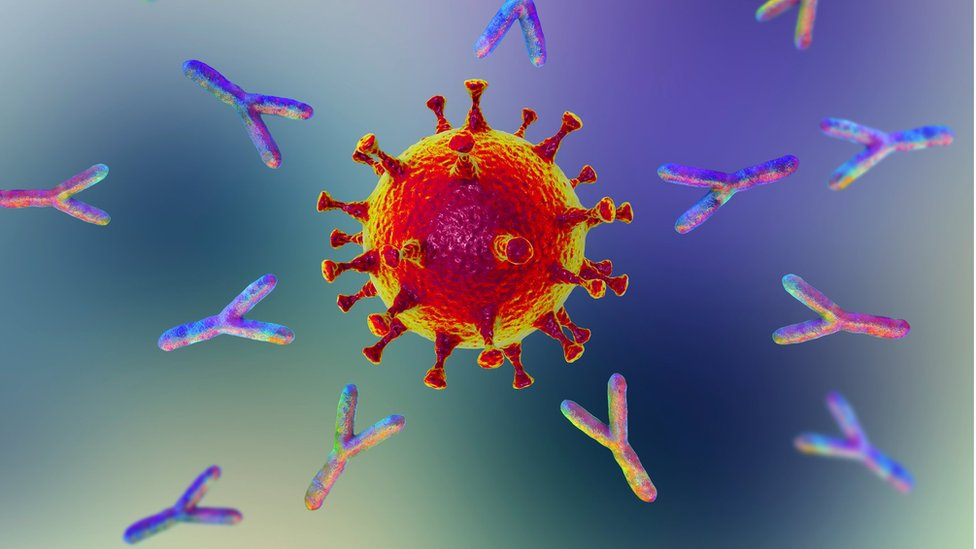

Los anticuerpos son proteínas producidas por el sistema de defensa natural del organismo (sistema inmunitario) para combatir sustancias extrañas, como las bacterias. Los anticuerpos se adhieren a la sustancia extraña y permiten que otras células del sistema inmunitario ataquen y destruyan la sustancia.
Las superficies de los virus, los hongos y las bacterias contienen marcadores llamados antígenos. Para destruir los virus, los hongos o las bacterias, el sistema inmunitario crea anticuerpos que son específicos para cada antígeno.
